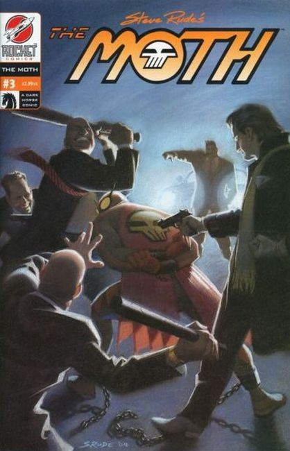

The Moth #1. The unbridled action spilling from the pages are an understandable consequence of teaming (penciler) Steve Rude, and (writer/ inker) Gary Martin together. So if you get punched in the eye because you're holding this comic too close, don't come crying to us! In this issue, The Moth runs smack into the face of trouble, in the form of his archrival, Nestor the bounty hunter. Check out the picture of Nestor, in the dictionary definition of the word scum!
You didn't listen to the warning about last issue, did you? And you had to explain to your mommy how you got that whopping shiner! Well...for the Moth #2 keep your head down because the action may smack you right between the eyes! American Libery returns in this issue, and with her charming personality captures the heart of everyone in the circus. (With one exception.) Steve Rude's great art raises the bar for all other comics!

"The Price of Liberty" The facial bruises you've received from reading your Moth comics too closely have become badges of honor. Now friends and relatives admire your machismo for being such a dedicated Moth fan! But now it's time to pull up your bootstraps, because we're turning up the adventure dial to full throttle! In this issue, The Moth is the target of a mob vendetta, and he must sacrifice himself to repay a debt.
In the final chapter of the Liberty saga, The Moth finds himself outnumbered and outclassed by a trio of mischievous cat burglars. While Jack's circus family gets an unexpected addition. Of course, the consequences of missing this spectacular issue will jeopardize your newly found stature in your community. Don't lose the awe and respect you've earned by your dedication as a Moth reader. So when you walk down the street, carry issue #4 with your head held high, and walk with Pride!